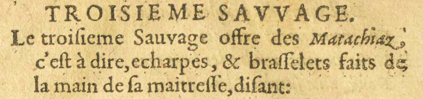
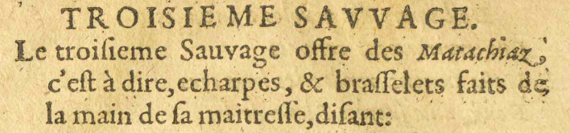
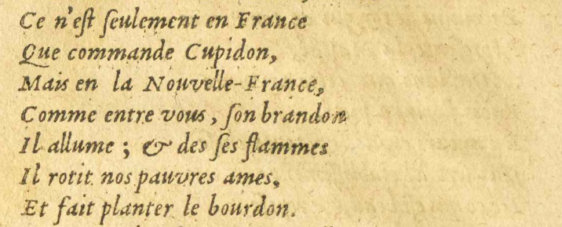
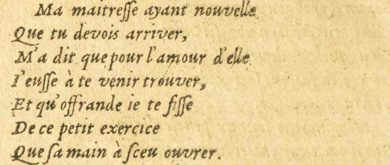
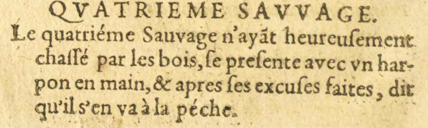

8/11
TROISIEME SAVVAGESAUVAGE.
 
Le troiſsieme Sauvage

Le troiſsieme Sauvage Désignation de ceux habitant dans la nature, c'est-à-dire loin de la civilisation. offre des Matachiaz,
Désignation de ceux habitant dans la nature, c'est-à-dire loin de la civilisation. offre des Matachiaz,
c'eſst à dire, echarpes, & braſsſselets faits de
la main de ſsa maitreſsſse, diſsant :
- Ce n'eſst ſseulement en France
- Que commande Cupidon
 Dieu romain de l'amour.,
Dieu romain de l'amour., - Mais en la Nouvelle-France,
- Comme entre vous, ſson brandon#12
 Rituel amérindien où la femme célibataire, jouïssant d'une grande liberté sexuelle,
enflamme une branche de cèdre qu'elle éteint au moment de désigner un homme avec lequel
elle souhaite partager son intimité.
Rituel amérindien où la femme célibataire, jouïssant d'une grande liberté sexuelle,
enflamme une branche de cèdre qu'elle éteint au moment de désigner un homme avec lequel
elle souhaite partager son intimité. - Il allume; & desde ſses flammes
- Il rotit nozE09 : nos pauvres ames,
- Et fait planter le bourdon#13.
- Ma maitreſsſse ayant nouvelle
- Que tu devois arriver,
- M'a dit que pour l'amour d'elle
- IJ'euſsſse à te venir trouver,
- Et qu'offrande ieje te fiſsſse
- De ce petit exercice
- Que ſsa main à ſsceu ouvrer#14.
QVATRIEMEQUATRIEME SAVVAGESAUVAGE.

Le quatriéme SauvageDésignation de ceux habitant dans la nature, c'est-à-dire loin de la civilisation. n'ayãtayantE11 : ayant heureuſsement
chaſsſsé par les bois, ſse preſsente avec vnun har-
pon en main, & après ſses excuſses faites, dit
qu'il s'en va à la péche.